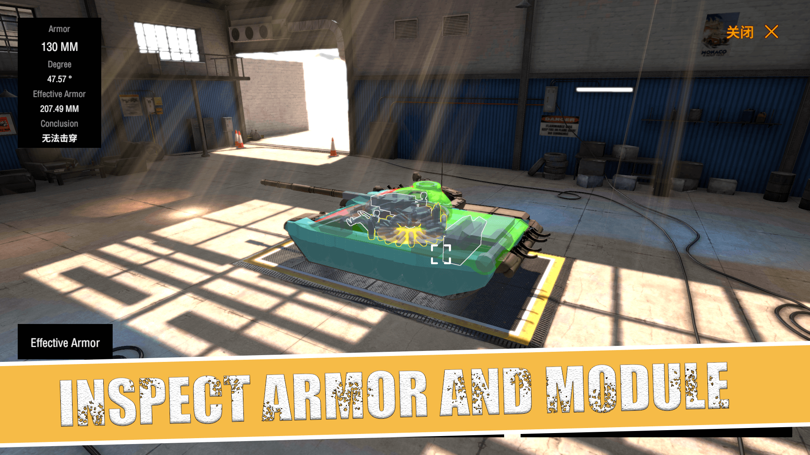

装甲纷争研发周报 & 日报

后续可做的内容
- 飞机，步兵用 新 UI 系统。输入这一块整理，保证统一都使用 Input System。
（输入值的规范，飞机输入值取反问题调查。弃用老的 Input 系统。）
- 自发光管理
- 调研 坦克工坊更加灵活的新 UI，方便后续新功能，新编辑，参考地图工坊编辑器
- 轮式载具可选项的机制 阿克曼转向 机制引入
- 武器过热机制
https://www.youtube.com/watch?v=ZwMa9g7lvT8
全职开发阶段 2023/10/16 ~
todo:
10/29 - 11月中旬
- 基于 Houdini 的大地图生成
- 气动模拟与稳定的飞控系统
- 版本相关优化
- 模式界面的弹药选择
- 增加更多的占点模式
更新日志：
新增载具： T-14,KF51,T-62
增加新大型地图：法国的隆格瓦列
新增模式：占点模式
Add new vehicles: T-14,KF-51,T-62
Add new map: Longueval Full
Add new game mode capture zones
版本更新内容 TBD：
- 增加新大型地图：法国的隆格瓦列。
- 修复人机占点时候，不会攻击其他目标
- 修复引擎被击毁还可以动
- 修复车库后效回放击穿后模块显示消失
- 修复炮管有时候超过俯角仰角问题
- 修复一些载具名称重复
- 修复 DIY 载具涂装换不上去
11/12
- 减面工具注入
11/11
- T-14 减面 （规划减面流程，接入编辑器）
- 普通版占点地图
- 普通版的模式屏蔽
- Church GC 模型丢失 （only 电脑，可能重新打资源可以解决）
11/10
- 修复 bot 的任务执行权重错误
- 优化地图的小地图
- 优化隆格瓦列地图 （点位）
- 空气墙 补给点，支持动态配置
11/9
检查一些载具模块消失 （跑一遍工具检查下）
记录的版本问题修复 版本问题记录：
车库后效回放击穿后模块显示消失
更换弹种时候 length 报错
修复炮管时候俯角仰角问题
引擎被击毁还可以动
普通版 and 决定版一些重复的车，只保留其中一个。 （38t,Bt-7,三号，t-35,skfz234/4,kv1,m4,t-34,m24,pziv g,kv2,灰熊突击炮，四歼，t-34-85,豹，is-2,酋长，m551,xm8,m4）
diy 载具涂装换不上去
新地图，新载具打包
11/4 -11/8
- 大地形工具 （湖泊，平地，）
11/3
- 细化场景建筑
11/2 地编流程
- 大地图建筑方案调研
11/1
- 编辑器的 HitBox 与 Module 用两个材质，方便编辑看清楚
- MapGen 技术调研
- 问题定位：编辑器工程遇到 infinite loop 导致打包故障 (把 xlua 与 PostProcessing 删了) 普通版包体过大问题
- 物理悬挂技术调研
- 把游戏的快速打包测试环境搭一下
- 测试实体悬挂稳定性与性能
10/31
- 截图模式 （是不是 Lua 就能做？）
- 模式缩略图切图 大图 360x410 小图 228x118
- diy 地图 icon 显示问题
- 车库模块显示问题 => 工具防止 HitBox 误操作
10/30
- 修复人机长时间攻击一个无法击穿的敌人
- 版本回归测试 （单机，多人，各个模式，各种不同类型的弹种）
- Steam ST 分支打包
- 修复车库后效不显示
- 发布更新 & 线上问题修复
10/29
版本bug 修复
- 人机近距离敌方目标权重低
- 新模式使用新人机
- T-14 等坦克，内部模块血量存在问题 (可能是打包机问题)
- Mine 地面材质丢失
- 新模式下，鼠标部分情况下被隐藏
- UI 局内与自定义位置适配问题
- 文字战报
- NvsN 不对称人数结算问题修复
- 最小，最大等级的判断逻辑
10/28
改善工具链，基础建设。
- 地图换成基于 Guid 的配置
- Config 增加支持跨项目的保存逻辑
- 确保版本稳定，预计11.1 更新客户端
- Bundle 库增加 Patch 功能，方便跳过热更本地快速调试
10/26 - 10/28
- 新的车库界面
- 新的模式选择流程
- 修复 N vs N 模式的匹配问题
10/22 - 10/24
- AI Task 系统，人机固有 Task + 模式特殊 Task （每个逻辑 Tick ，排序 Task 权重）
- 寻路 Task
- 锁敌 + 攻击目标 Task
- 占点 Task
- 攻击某位置 Task
- 防御某位置 Task
10/25
- 打包机一键同步项目 sh
- 进入模式界面迭代
- Task
- 攻击某位置 Task
10/24
- 占点模式的测试反馈迭代
- 占点模式的点数机制 以及 胜负判定
- Config 自动打包优化
- 导出新的 api
- 模组教程从语雀迁移到官网
10/23
- 锁敌 + 攻击目标 Task
- 攻击目标任务时候 进入 FSM，摆角度，装弹，找到合适攻击位等逻辑
- 基于模式的 Task ，占点 Task
- CountrySide 地图增加占点模式
10/22
- AI Task 系统
- Task 对应的 Handler， 可能是简单的 Handler，也可能是复杂的 FSM
- 新的人机寻路 Task （更好的规划路线）
10/21
- 占点模式细节优化
- 出生点位置调整
- 增加复活 CD
- 占领点之间的连通性规则
- 新 AI 框架设计调研
10/20
- 创建 Trigger API
- 占领点逻辑
- 占领点 UI 修改
10/19
- 修复自定义 UI 按钮监听没有及时销毁，导致无法重开lua 虚拟机
- 占点模式选车功能
- 占点模式 UI 细化
- 从不同占领点出生
- 头顶的两队分的计算
- 队伍出生逻辑
10/18
- Lua UI MVC 功能
- 占点模式的 Lua UI
- 显示当前不同占领点归属情况
10/17
- 重构 Config 加载 ab 的功能
- 增加 ResourceTable
- 暴露背景摄像机位置操控 API
10/16
- 出生点系统增加根据给定点位随机
- 占点区域可视化
9.19 并行：切新版本号，发热更 模式需要增加一个 dropdown 保存预设，以及删除预设 试车场回到选车页面，需要关闭载具下拉框
8.29 试车场改为 Lua 版本实现 实现场内换车 （原地） 需要以下 API 内容
- 隐藏双方比分
- 作弊 API 启用， （此时，关闭结算收益）
- 游戏模式选择，地图选择的数据管理，放到单独的 Manager 上，解耦 GameMainGameModeUIComponent.cs
占点模式
- 提供接口，给 AI 了解目前有哪些点需要去占
8.12 ~ 8.13 本周末工作进度： 新的对战积分显示，占点界面 50% 载具分 Unlit, SimpleLit 与 PBR 三种不同 Shader 了解 CityGen3d 用法 50% 新版 lua 的遭遇战，支持空战以及玩家的一些需求 50% 检查Mod 直升机结算界面倒飞问题 重构玩家数据结构，使对战面板可以累积造成伤害值等数据 提供给 Lua 的通用的选项界面，通用的序列化接口
Work of dev in this weekend Battle points display and point capture UI (50%) Vehicle shaders option for Unlit, SimpleLit, and PBR Usage of CityGen3d (50%) New Lua skirmish mode with flight combat (50%) Refactor player data structure for cumulative damage tracking on the team panel Provide a generic Lua interface for options and serialization interface
8月版本
低端显卡支持
- [x] 低端显卡支持选项
- [x] 载具的低配 Shader NPR
- [ ] 场景增加去光 Shader 自动替换
- [ ] 特效分层 （降特效渲染分辨率）
- [ ] 特效质量管理（粒子数量 > 某个threshold 降低粒子数量）
模式重构计划
- [ ] Lua 模式接口开放
- [ ] 所有游戏模式转为 Lua 编写
- [ ] 占点模式
- [ ] 出战队列选择 通用 UI
- [ ] 载具过滤界面增加国籍过滤 以及国家背景图？
7.30
- 新的结算画面
RC 1
- [ ] Lua Buff
- [ ] 引擎着火 Buff
- [x] T-35 等炮塔坦克，实装新的 Guid 关联
- [x] HP Only 的载具可以卡到 Include Module 模式下
- [x] 血条颜色太亮了？ 连续掉血的表现不佳，会抖动
- [x] UI 透明度调整
- [x] Substitute Buff 需要保证服务器不会自己加， ClientToServerOnly 或许需要一个更加 Generic 的结局方案。 （此版本暂时不修复，不影响正常游戏对局，最多有点报错）
新模块系统
- [x] Buff 系统
- [x] 模块自动修理
- [x] 模块自动修理优先级
- [ ]
模块自动修理优先级设置 (会有网络同步问题，暂时不做) - [x] 模块手动修理
- [x] 载具模块状态显示功能解耦
- [x] 模块状态网络状态同步解耦 （强制服务器模块状态覆盖本地状态）
- [x] 飞机 KnockManager
- [x] 成员换位
- [ ]
X-Ray 解耦 飞机暂时不需要提供 X-Ray - [x] TopCamera 解耦
- [x] 模块颜色同步显示界面解耦
- [x] 绑定坦克模块成员，对应的 Controller
- [x] 绑定飞机模块成员，对应的 Controller
- [x] DIY 坦克生成需要绑定不同模块
- [x] 飞机模块继承对应接口，实现 Debuff 逻辑
- [ ] 模块修理按钮需要能够有不同类型的按钮看清楚模块类型
- [ ] 模块修复，替补成员，需要快捷键
- [x] 模块绑定，需要插槽
- [x] 手动修理模块时候，需要降低炮塔移速，与禁止移动
- [x] 成员补位需要面板
- [x] VehicleBaseModule 层级还是给下调到 -1
- [x] 一些模块检查为啥没有 Handler
- [x] 衰减系数叠加后有点离谱，有待优化
- [x] 装填时间要显示被减少了多少百分比
- [x] 弹药架击毁后增加一个 弹药架爆炸的 Buff，在下一次弹药架再次被击毁时候，殉爆载具。
- [x] 客户端或者服务器载具炸了，相互发协议确认，
- [x] 测试多人模式是否正常
- [x] 炮弹换成对象池
- [x] VehicleBase 自定义键位
- [x] Minimap 开关选项
- [x] 混合模式需要可以秒修模块 （且修理包是 cd 恢复点数）
- [x] 修理包点数功能
- [x] Damage 模式，增加 Hybrid HP Module
- [x] 控制器 Buff 接入补全：
- [x] 1. 机甲
- [x] 2. 赛车
- [x] 3. 车
需要同步的 Checklist:
- 模块血量变化时
- 添加非自动加的 Buff，如手动维修逻辑
- 需要一个基类，公用模块相关协议
2023.3.1-2023.6.1
- [x] 飞机增加瞄准到目标才允许开火
- [x] 修复飞机手机端按钮输入逻辑错误
- [x] 修复部分坦克法线错误
- [x] 增加坦克的 Lua 控制重载
- [x] 编辑器 NPM 源
- [x] 编辑器支持 FPS
- [x] 修复 HE 爆炸对装甲排序的错误
- [x] 运行时 Lua Profiler，以及 Lua 相关性能问题修复
- [ ] 车库显示抗破，抗穿区别
- [ ] 涂装界面通用化，迁移普通版
- [ ] 自定义贴图界面通用化，迁移普通版
- [x] 车库后效回放功能
- [ ] FPS 改进 UI 与 输入
- [ ] FPS 移动使用 FSM
- [ ] FPS AI 支持 武器 FSM
- [ ] 机瞄调试工具完善
- [ ] 新编辑器工具安装教程
- [ ] 增加 CC 的 Lua 控制重载
- [ ] 物理悬挂履带技术尝试重部署手机端（性能调优）
Lua 功能改进
- [x] Lua 脚本导入编辑器的自定义 import
- [x] Game mode 支持面向对象 （传入 self）
- [x] 客户端的 lua 文件夹，用于快速调试 lua 文件
- [x] DIY 的 lua 组件，支持面板上显示调整 Lua 自定义的 Property
- [x] lib 的依赖功能 窗口
- [x] 原本的 LuaProject 工程，框架内容与游戏性内容文件夹整理。 游戏性内容，用新的方式进行改进。
2023.2.1-2023.3.1
- [x] md5 校验本地文件增加进度条
- [x] 多人模式服务器资源打包流程
- [x] 改进炮塔，修复历史遗留问题
- [ ] Map Build Group 改为 Map Wizard 默认创建方式，Map Group 自动设置 scene name
- [ ] 优化 Shared Data 对配置文件的刷新逻辑 （在 Pack 与打包时候处理 Shared Data 的覆盖）
- [ ] Map 打包时候强制要求填写地图本地化名称，载具则是 log 提示填写本地话名称
- [x] 优化编辑器的报错提示，增加汉化
- [ ] 编辑器导入、导出地图工坊的视频教程，以及对 DIY 地图在 Unity 内打包时做一些特殊的优化。 （生成一个 Temp Scene，对于未烘培光照的地图，则直接放入一个 rule assembler，在加载地图时候才加载 DIY 地图资源。对于存在烘培光照的地图，记录光照烘培信息，动态创建 DIY 地图资源时候，对资源进行 lightmap 的绑定）
- [x] 编辑 HitBox，VehicleTextData 时候，pop 新的窗口。
- [x] 对同一个 parent的，可 batch 的模型物体进行合并 （DIY 开启可合并，）
- [x] 62式 后效修复，PBR 化
- [x] FMod 的技术调研与接入
- [x] 编辑器修复弹药架排序问题
- [ ] 机甲增加 DIY
- [x] 修复 DIY 自定义尾烟
- [x] LOD 设置 Layer 跟随 创建者的 Layer
2023.1.1-2023.2.1
春节阶段
- [x] 增加举报与封禁系统
- [x] 内部资源工程转为可公开的 mod 工程
1/19 普通版兼容
[x] 打包时候 HotFix 随包资源
[x] 增加内置成员语音
[x] 队伍列表按钮，左右两侧列表删去 （放在界面左侧）
[x] 普通版聊天框调大
[x] 房主端记录所有聊天，方便举报功能
[x] 升级 arr，增加 dependency.xml
[x] 房间额外信息显示小版本号
[x] 联机界面显示大版本号
[x] 联机界面进入时候显示多人模式的用户协议
[ ] 热更逻辑优化，本地zip解压成功做一个标记位，尽量减少热更整包的可能性
1/15
- [ ] 科技树支持 Mod 的文档说明
- [ ] DIY 科技树，如果有未安装的 DIY，显示一键下载所有科技树 DIY 的功能
- [x] unity package 依赖放到 manifest.json 里 ad 和 timeline 的
- [x] 瞄具增加图片显示
- [ ] 瞄具增加重载 炮镜效果
- [ ] 左右两队顶部类wot总血量显示 可以参考坦克连等游戏设计
1/8
- [x] Mod 安装器入口增加
- [x] Depth Texture 实时生效
1/7
- [x] Tonemapping 开关 , Bloom 开关 -> 根据后处理质量开启
- [x] 查看多人模式飞机自爆问题，飞机伤害盒穿过问题
- [x] 队伍面板增加伤害，击杀显示支持离线显示
- [x] Mod 安装器改为快捷方式
- [x] 修复 Steam 版 内置模组下载器列表空
1/6 热更，打开客户端即会下载更新
- [x] 修复 Ju 87 螺旋桨渲染问题
- [x] 修复单机模式下部分飞机无法击中 （多人模式房主问题给等下次客户端更新修复）
1/5
- [x] 科技树支持Mod 配置
- [x] 炮弹射线双向检测，防止从地下被穿
- [x] 修复自定义车库地图删除时，导致无限卡死
- [x] 增加一个带火炮的 Random 的 API
1/4 热更，打开客户端即会下载更新
- [x] 内置载具 T-72, IS-2 模组命名冲突
- [x] BF-110 HE-111 螺旋桨渲染不正确修复 (Ju-87还有点问题下次修)
- [x] M1 履带穿模修复
- [x] 机枪后效增强
- [x] 增加 Mark IV,FT-17,A7V
1/3 小包 平衡性调整
- [x] 默认初始装弹剩餘 0.5 秒 (測試普通裝彈，彈夾，彈鼓，以及能量武器)
资源调整
- [x] 热更每次校验本地文件 md5，对于差异文件需要加入到热更列表，防止本地文件损坏导致游戏体验问题
- [x] 校验外部公共文件夹内文件是否可以读写
优化调整
- [x] 关闭 bloom 的 high quality filter
- [x] 增加是否开启深度图的选项
- [x] 不开启深度图，天光效果也不开启
Bug 修復
- [x] mod的 lua 環境未創建
2022.11.1-2022.12.30
非全职阶段周报，预计大小周版本发布频率
11.28-12.25
- Mod 工程侧打包流程优化
- [x] 增加 dds 转 png 的自动导入流程
- [x] vehicle info 打包组，方便将多个载具打包到同一个 modpackage，减少资源的冗余
- [x] modpackage 增加导出 steamships 的文件夹
- [x] 编辑器与 Steam Mod 上传工具打通，上传工具的源码加入 middle layer
- [x] dependency 优化
- [x] 修复打包依赖的hash变化
- 项目侧需要一个更加强大的 Mod 加载框架
- [x] 支持 Package 的 基于 GUID 的 dependency 加载
- [ ] 支持 Package 的文件校验 （是否丢失，md5）每次运行只校验文件是否存在，如果文件不存在则说明可能模组文件被删除部分。安装时候校验 md5，防止 mod 文件下载时候，安装时候文件损坏
- [x] 支持拆解到空工程进行项目测试 与特定业务解耦
- [x] 也支持可动态加载 Mod （当动态加入了新的 Mod，重写 Resolve 依赖，尝试把因为依赖问题导致无法加载的 Mod 加入进来）
- [x] mod 的依赖文件在文件夹上进行隔离，防止 a 的依赖文件加载到 b 模组加密
- [x] nested mod package files ，将文件夹以 有 package 文件夹作为一个文件夹
- [x] 详细的测试，包括官方模组，社区模组，付费模组，steam 模组，mod.io 模组。需要小范围的社区玩家的支持。
- [ ] 评估是否仍需 cache vehicle info 的流程
- [x] 内置模组器下载 DIY 载具的特殊逻辑处理 (增加 Resolve 机制)
- [x] 普通版载具，决定版载具打包为 mod，以 mod 形式加载，方便热更以及版本之间的共享
- [x] 解压本地热更新，需要显示一个界面，并且解压的流程放线程里面，防止主线程卡死
- [x] mod.io 传的一些 modpack 文件，订阅后，自动拷到安装目录
- Bug Fixs
- [x] 修复初始炮塔朝向不对
- [x] 修复一些情况下载具 icon 不显示
11.21-11.27
- 数据平衡 & 补机枪：豹式，虎式，M4 谢尔曼
- 兼容旧载具：所有载具改为新音效系统的引擎音效与开火音效
- bank 支持从 ab 加载，放入热更文件夹
- bank 的语言组制作教程
- 项目侧需要一个更加强大的 Mod 加载框架 20%
11.13-11.20
- 载具 rpm 换挡改进
- 履带音效
- 方向机 高低机音效
- 成员语音改fmod
- t-34-76,t-34-85,kv-1,kv-2 相关音效改进
- 增加 Shared 数据的导出
- 增加 JObject 数据的导出与导入
- 修复 sound bank 加载流程的一些问题
11.7-11.13
11/7
- 修复下登陆窗口默认显示的问题，用代码隐藏默认隐藏的界面，防止后续误操作
- 代码回合 master
- 夜间打包
11/8
- 分享码 hash 变化原因：新增字段。修复未分享码的提示。
- 自定义贴图集与管理器 （master分支）
11/9
- iOS版加入加载遮罩，隐藏加载进度条，更改包名
- 自爆功能，自爆的弹药继承 explosion bullet （master 分支）
11/10
- 自爆功能完善
11/11
- 调整默认的模式顺序，不联网的情况下不显示多人模式的下拉框，把旧的多人模式去掉
11/12
- 地图工坊增加一个组件，来支持多场景的叠加。地图加载的逻辑需要抽出来，不与加载系统绑定。
- rf 地图支持 自定义 DIY 地图的 rules
11/13
- fmod 接入
- 离合功能 gear 功能开发
11.1-11.6
11/1
- 修复 DIY 副炮无法自定义弹药，增加开火组。 更新到线上去。
- 共享类数据的读取改为 Runtime 50%
11/3
- 共享类数据机制重做，改为用 自定义 Editor，OnEnable 时候将所有编辑的 Target 所依赖的 VehicleTextData 都找到，然后 GUI dirty 时候，对所有的 Target 重刷数值。50%
11/4
- 共享类数据机制重做，改为用 自定义 Editor，OnEnable 时候将所有编辑的 Target 所依赖的 VehicleTextData 都找到，然后 GUI dirty 时候，对所有的 Target 重刷数值。在 BuildPipline 时候再做第二次的数据赋值，保证其数据的正确性 100%
11/5
- 普通版发布新更新
- 增加 rf 地图的支持
- DIY 轮射机制
11/6
- rf 地图可自定义出生点
- 增加登陆 & 加载的背景图，防止卡 iOS 审核
- 编辑器增加检查依赖工具
2022.9.29-2022.10.31
全职工作阶段日报， 10月记录 2022/10/31
- 全职开发阶段的文档整理，技术复盘。打包流程相关记录。
- 拖车增加 DIY 参数
- 调整 HE 机制
- 履带 Material Property 增加对 Color 的支持
- 修复 DIY 副炮无法自定义弹药 （未发到线上）
- 增加开火组 （未发到线上）
2022/10/30
- 小拖车逻辑进行优化，以便支持任意节点的连接
- 发布普通版的更新
- 发布决定版的更新
2022/10/29
- 弹种相关优化
- 伤害，穿深浮动默认系数从 0.75~1.25 改为 0.95 ~ 1.05 ，且加入到 Conf 数据中，方便玩家自定义配置
- AP，HE 弹 增加是否随距离衰减选项，AP 默认开启，对 防空车的炮弹关闭。 HE 弹默认关闭。 随距离衰减系数从 0.1 改为 0.05
- 服务器炮弹校验不通过原因定位
- 普通版 bug 修复
- iOS版本（海外）提交审核
2022/10/28
- 对新版本内容进行回归测试
- 打包机配置安卓包打包环境 （提升工作流效率）
- 小拖车在多节连接时候， ReAttach 问题。回放表现优化（抖动，初始位置错误）。
- iOS 版本一些问题解决，预计 10/29 提审
- 一些 io 路径错误，进行修复
- 检查iOS的一些审核合规要求
- 资源分包，热更相关逻辑优化，防止各种情况下的下载失败
2022/10/27
- 小拖车开发 100%
(回放功能， ReAttach 物理表现优化，多人暂时禁用 DeAttach（要加协议），开镜特殊处理，开火后座特殊处理)
- DIY 模块增加 LOD
- LOD 相关机制改进
- 载具工坊导入时候缺失的模块提示具体缺失的内容
2022/10/26
- 小拖车功能开发 70%
- 挂载的 deattach ，reattach 逻辑完善，增加 UI ，输入用 InputSystem
- iOS 版本支持工坊内容
2022/10/25
- 载具存档增加如 地图一样的 extra 信息
- srp 兼容特效上的模型
- iOS 打包自动化 100% (xcode 工程 导出 ipa 与上传 AppStore)
- 小拖车功能开发 30%
- 普通版客户端更新
- 弹药自定义 老界面替换
- 空气墙问题客户端修复
- 升级版本号，显示强更界面
2022/10/24
- 小拖车功能技术调研
- 编辑器增加导入载具存档功能
- 空气墙丢失问题紧急修复
- iOS 真机测试
- iOS 打包自动化 50% (Unity 导出 xcode 工程)
2022/10/23
- 进行普通版的更新工作
- 新版本打包，以及服务器部署
2022/10/22
- 定档 10/23 更新普通版本
- 服务器内存占用优化，打包普通版的服务器，架设个测试服在负载低的服务器上
- 打包 il2cpp 普通版跑测体验
- 检查 海外版功能是否都正常
- 检查 国内版功能是否都正常
- 决定版海外发布更新相关工作部署
- 资源校验流程改进，联网验证流程改进
- 上传 aab 包到 Google 进行本地测试，然后发布更新
- 决定版喷火器优化
2022/10/21
- 去公司办离职相关手续
- iOS 海外版本发布等工作部署 80%
- mac 机 工程部署与打包
- 真机测试 测试设备未注册，等待苹果审核，https://www.yuque.com/uasier/blog/srmqxz 暂时在旧 iPad 设备上尝试运行iOS版本
- 普通版新版本 回归测试
- 内衬减伤变成了增伤
- 无调试日志，无日志上传功能
- lod 问题,lod 系数保持与决定版一致 0.4，0.6，0.8，2
- 决定版热更内容：
- DIY 地图的碰撞问题 （重打包下资源）
- 火炮的模块化设置
2022/10/20
- iOS 海外版本发布等工作部署 50%
- xcode 版本升级
- mac 环境 Jenkins 搭建
- 普通版相关工作
- 合并最新代码
- KV，丘吉尔，M4作换皮新载具， 加一个额外的喷火器模型，升一级作为新研发坦克。
- 喷火器弹道优化
- 普通版 bug 修复
- 打包客户端与服务器
- HDRP 地图内容开发 （长期工作）
2022/10/19
- 海外版随包资源优化 走 SteamingAssets，校验改为服务器发起
- iOS 海外版本发布等工作部署 20%
- 苹果开发者账号续费
- mac 环境重搭建，系统升级
- HDRP 地图内容开发 （长期工作）
- 20221015_OBT 版本问题修复
- 充能武器的网络同步 以及 回放问题
- 指挥官模式的 bug 修复
- 回放表现优化
- 20221015_OBT 内容测试
- 多人联机武器开火同步，激光同步，火焰同步
- stb等载具的材质是否正常显示
- 新广告系统是否在手机上正常播放
- 回放是否正常
2022/10/18
- 编辑器相关优化，进行更多的本地化覆盖，改善 Mod 开发者的工作流。
- 普通版海外用新的聚合广告。（Unity 即将弃用 老的广告系统）
2022/10/17
- 可配置数据从游戏主模块脱离，方便三端同时更新。 100%
- HDRP 版本进行更新 并管理版本
- ModIO 放 Manager
- 车库历史战配置放 Config
- Vehicle Camouflage 从 URP 迁移，四个情况的材质球。
- Addressable 资源位置摆放整理，参考 URP。
- 场景转 Addressable （为啥 pack group 没自动生成？）
- 载具转 Addressable 的依赖，生成 lod
- Mask 采用与 URP 一致的
- 脏迹贴图 采用与 URP 一致的
- Timeline
- 后效回放与 Main Camera 的后处理进行区分，防止曝光导致看不清后效回放。其次，尽可能优化后效回放时候的渲染压力。 HDRP 对多摄像机的优化不是很好。
- 普通版进行更新，并推送 Steam SuperTest 分支测试。 构建安卓版，以及服务器版。
2022/10/16
- 跟进 20221015_OBT 版本问题
- 动态天气丢失 (Profile 未打进包里，Addressable 打包问题)
- SPG 没法瞄准 （时序问题）
- 热成像显示问题 （LOD 问题）
- 谢尔曼尾部无法击穿：（间隙问题，后面排挡修复）
- 车库载具展示问题 （层级设置错误）
- 部分情况下喷火,激光特效消失（对象池在开火后才创建，时序问题）
- 地形Height 修改 Blit Shader 丢失（Addressable 打包问题）
- HEAT 调整为 1mm 损失 3mm 穿深 (平衡调整)
- 版本发布翻车，复盘遇到的坑技术点
2022/10/15
- 切稳定分支 20221015_OBT，打包游戏并跑测检查问题。同步代码到 HDRP版本，进行打包。
- 优化能量武器的数值与音效。 （可热更新）
- 修复 lua 模式报错
- 删除纯白涂装
- 修复音量最小仍有声音
- 可配置数据从游戏主模块脱离，方便三端同时更新。 80%
2022/10/14
- 将移动端的键鼠输入优化合入 master 分支
- 输入控制启用、禁用管理，防止未聚焦时候误输入
- asmdef 整理
- 编辑器相关代码整理，增加 自动生成 link.xml ，strip code 等级调整。
- 解决版本 bug
- 尽可能完成部分玩家建议的优化单内容

2022/10/13
- 载具自动 lod 生成
- 载具Addressable 资源冗余解决
- hlod 技术调研
2022/10/10 ~ 2022/10/12
- if 节点优化后性能有所提升，但是 keywords 真机变体丢失。
解决方案： a. dirt 使用 multi compile 而非 feature，打包时候会自动排列需要的关键字，防止打包丢失变体。 b. 涂装用 lerp 决定是否开启效果，而非 keyword 防止过长的打包时间
- perfect culling 与当前的场景系统冲突，需要将资源引用创建一份新的 prefab 并保持原有引用，然后设置 Addressable 进行合理的分包。否则，Addressable 的大小会太大。
目前进度： a. Addressable 如果单纯把场景都放一起打包，会有 1.2g 的占用。 b. 在尝试使用 pack seperately 以及 lzma 压缩格式。 解决方案： a. 关闭 static batching 防止打包包体过大 b. perfect culling 暂不加入新版本，等后面版本增加一个选项后再统一加入。 c. 场景的依赖性加入到 Addressable，减少资源冗余
2022/10/9
- 载具 Shader 性能优化，Shader Graph if 节点优化掉，可能是 gpu 瓶颈。改为用 Keywords.
Keywords | Shader Graph | 8.1.0
2022/10/8
- 下周还给上一周班，所以，下次版本更新定在 10/15。日报暂时暂停。
2022/10/7
- 增加充能类武器音效
- 激光，火球增加伤害，穿深按距离衰减的曲线
- HEAT 弹通过间隙装甲时候，1mm 间隙损失 10mm 穿深
- 规范伤害，穿深的 Buff 机制
- 增加工坊激光枪武器
- wwise 相关技术调研
- 继续尝试改进 OTA 鼠标输入的问题
2022/10/6
- 激光武器的开发 100%
- 喷火武器迭代
a. 改善喷火武器的后效 b. 增加工坊喷火器武器
- 修复 Steam 版多人模式可打开 GM 面板
- 尝试改进 OTA 鼠标输入的问题
2022/10/5
- 喷火武器的开发 100%
- 喷火后效与数值计算
- 能量武器开火管理 100%
- 特效接入
- 保障 20221003 版本的稳定发布
- 修复开火后坐力都与主武器一致
- 车库增加旋转朝向自定义
- 修复 BanPick 界面读取配置的界面适配问题
- 修复 FPS 模式准星刘海屏适配问题
- 车库显示特效对象池
- 修复火炮在车库的炮塔默认朝向
2022/10/4
喷火武器的开发 50%
- 喷火器模型准备，特效准备
- 弹道系统抽离为 普通弹，VT弹，喷火弹
- 能量武器开火管理 50%
保障 20221003 版本的稳定发布
- 修复自定义地图被删除后，车库展示界面卡死
- 修复 VT 弹空爆算法错误
- 修复炮管制退错误
- 修复一些报错
2022/10/3
- 进行版本发布相关工作，切稳定分支 20221003_OPT。跑测游戏，对新增内容进行验收，以及回归测试。
凌晨进行自动化打包发布工作。
- 车库展示运镜
尝试 Timeline 效果，各种运镜技术调研
2022/10/2
- 人机载弹量随机分配，带来更多策略
- 显示瞄准的目标的装甲与击穿率
- 地图工坊增加刷载具点（记得升 lua version）
- 自由摄像机最好可以改为通用 UI 框架，其次，最好继承 BaseInitSystem，以玩家形式加入到游戏内。
- 决定版遭遇战，历史战，增加自由摄像机选项
- 伤害，穿深的伤害数值分布与 WOT 更加接近，修复高爆弹越打伤害越高。
- 出包对近期新内容进行回归测试 50%
2022/10/1
- 生成 Lua 界面的 Binding 代码，方便 lua 侧的 UI 开发
- 遭遇战可从载具列表中进行选择，（lua 那个遭遇战模式去做）
- 车库自定义背景与位置 100%
（位置自定义设置，以及摄像机的层设置，防止空气墙也显示）
- UI 加载中状态的管理以及切场景时候，可以统一卸载一下 UI
（部分卡UI的方法，刚进游戏就退出，此时可能在异步加载 UI）
- 比较粗略的死亡回放，从当前朝向往击杀人那边进行观看
- 飞机打包采用 GUID
2022/9/30
- 弹种界面改善，让玩家可以分清楚哪个是副炮的，哪个是主炮的界面。
- 开火系统的初始化重构，确保开火系统的数据的时序性，能够初始化时候取到正确值。
- 飞机增加弹种的显示
- BP 界面迁移到新的UI框架，且增加配置加载与保存功能
- 准星抖动修复
- 车库自定义背景与位置 80%
2022/9/29
- 弹种支持配置副炮，迁移到新 UI 框架，有望接入到普通版。
2022.7.1-2022.8.1
- 改善坦克，飞机的位置的同步算法，更加平滑准确。
- lua 开发相关教程， lua view code 生成。
- 单元测试，测试伤害分布是否满足正态分布，
- 增加diy 水体
- 坦克倒车爬坡优化
- 撞击伤害考虑装甲
- 改善坦克的旋转表现
- 改善直升机控制
2022.6.1-2022.7.1
- 地形 2.0 工具迭代
- Bot 翻车检测，自动归正
- ~~服务器伤害校验逻辑修改 （此方案因安全原因无法实现）~~尝试提高玩家的同步频率以及改善服务器的网络。
- 游戏内导入（坦克、地图）工坊分享码（最新 )
- 寻路编辑可视化功能 （用于检查寻路功能是否正常，可调节的寻路参数）
- 坦克工坊炮塔增加默认插槽位置
DIY 补全进度
- T-64BM
- T-80
- IS-2
- MK6 酋长
- M60
2022.5.4-2022.6.1
- 模组编辑器，工作流改善。增加 Headless 打包策略。
- 模组完善计划 https://www.yuque.com/chaojiduolajiang/panzerwar/zky173
- Y 高度检测，小于一定 Y 坦克爆炸
- 检查steam版读取mod文件路径
- 增加载具工坊，地图工坊导出modpack功能
- hdrp ，普通版代码同步
- hdrp 地图工坊基础功能接入
- 全面屏，刘海适配
- 接入 mod.io ，迎合海外的 ugc 社区 https://pw.mod.io/
- 模组加载流程提示
- 工坊增加发布选项
2022.4.17-2022.5.3
- 摇杆优化
- 坦克手感优化
2022.4.4-2022.4.17
- 地形相关方案选型与实现 （优先度较高）
- T-54 悬挂调整
- 改进 BuildPipline ，减少打包时间。 1. 打包完成后，只保留在打包列表内的文件与 manifest，其他老旧文件则输出 log 并删除。（高优先级，现在打包时间实在太长了！）
- 改进 BuildPipline 的标签打包系统。分主资源 (对应 variant) + 依赖资源 （.unity3d）
- 地图工坊，载具工坊增加 世界/局部坐标切换按钮
- 出生，寻路节点增加一键贴地按钮
- 增加维修点，补给点
- 增加多种 Sky 的实现方式。 1. CubeMap + exposure 调节 2. 动态天空 3. 传统 6面 SkyBox
- 植被在新场景不显示问题调查（尝试更新插件）
- Mod Pack 增加 hashcode 功能选项
- 复制物件 改善交互，增加提示框 （可热更新）
- 地形编辑增加锁视角。
- 自动贴地选项，在所有物体加载完毕以后自动贴地
- 地形贴图缩放比例 针对 Tiling 的自定义，防止地形模糊。
- 增加 Focus 功能
- 放置射线未检测到物体，则放置在 y =0 的平面
版本问题修复
- 库尔斯克材质丢失
- 地形编辑加入是否在编辑的选项
- 地形界面改进，本地化
- 地形类型，夏季冬季
2022.3.27-2022.4.3
计划：
- 通用的摄像机控制框架，接口设计，若超过一个可用摄像机，界面增加切换按钮
- 增加 Gta 式的自由旋转，跟随摄像机控制
- 赛车摇杆输入方式作为通用操作方式之一 支持自定义位置 方向盘提供 -> steerG 油门 刹车提供 -> accelG 手刹 icon 氮气 icon
- 赛车操控热区范围过小，对于两边同时点，查看原赛车框架源码，现在有反向输入的bug
2022.3.14-2022.3.27
- 地图工坊 DIY
- lua 侧 framework 整理
- 3D Wheel Collider，赛车插件接入
- 准星抖动修复
====================== 封版内容修复 =============== （已完成）
- 氮气图标不好点
- Jeep 无音效
- SUV 无 HitBox
- Mod 编辑器更新
- 自定义部件场景内仍无法播放推倒动画，检查原因
- Tag 根据类型显示不同颜色 （红-> RedTeam，蓝->BlueTeam，黄->寻路点）
- 空气墙组件 （编辑器模式下 Cube，运行时只留 box collider）
- 地图编辑器模式入口
2022.3.7-2022.3.13
- 整理 VFX，Audio，UI 到通用目录
- 普通版 编辑器更新至 2022.2，Toponad插件更新，正常出包
- 编辑器工具 2022.2 分支更新，增加 Guid 查重工具
- 修复部分情况下击穿算法错误。（预分配数组未清空上次射线结果）
- lod 优化
- 修复部分情况下跳弹朝向错误
TODO - 待完成内容
- 增加 车头固定摄像机控制
- 工坊相关提示优化：保存成功提示，新手教程入口。-> 相关文档建设
- 制作 Mod 可能遇到的问题文档沉淀
- 赛车插件的资源，代码 Review。 Mod 工程相关案例整理。
- 地图工坊增加 Warning 列表，警告地图的可能性问题
- 增加右键拖拽选项 针对 PC
- 长按事件参数自定义，最短，最长。地形编辑下，关闭长按功能（可热更新）
- 保存提示缺失更加完善，冲突文件更加完善。
- User Define 增加配件 info，在导入缺失配件时候，可以提示到缺少哪个配件
- Map Define 在缺失场景 diy 下，仍保证其可以正常导入地图，可以 notice 缺少哪个场景 diy
- ScrollView 意外消失 原因不明